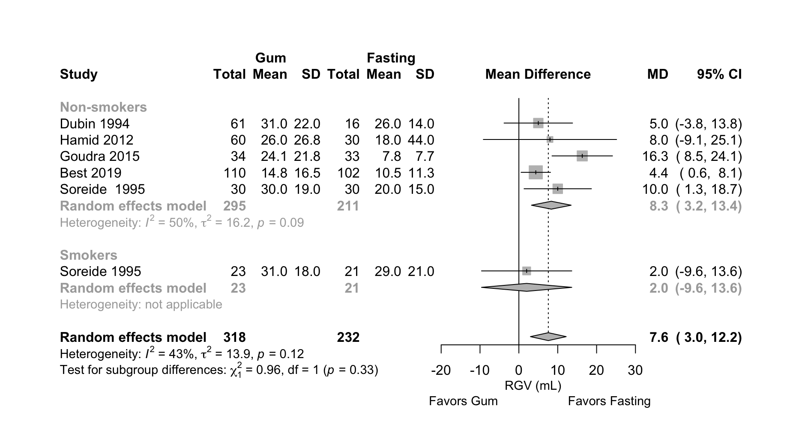
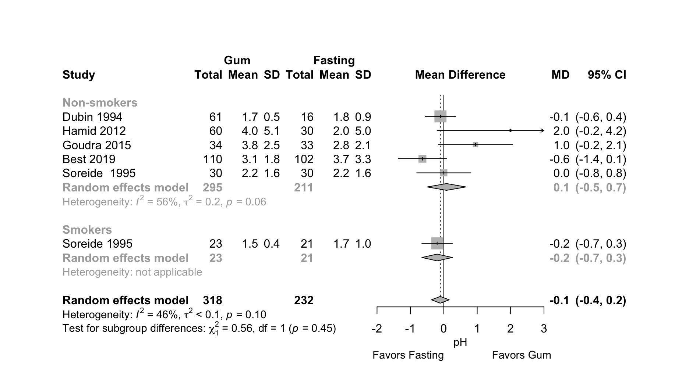

Last updated: 2021-10-09
Checks: 6 1
Knit directory: Fasting/
This reproducible R Markdown analysis was created with workflowr (version 1.6.2). The Checks tab describes the reproducibility checks that were applied when the results were created. The Past versions tab lists the development history.
The R Markdown file has unstaged changes. To know which version of the R Markdown file created these results, you’ll want to first commit it to the Git repo. If you’re still working on the analysis, you can ignore this warning. When you’re finished, you can run wflow_publish to commit the R Markdown file and build the HTML.
Great job! The global environment was empty. Objects defined in the global environment can affect the analysis in your R Markdown file in unknown ways. For reproduciblity it’s best to always run the code in an empty environment.
The command set.seed(20201201) was run prior to running the code in the R Markdown file. Setting a seed ensures that any results that rely on randomness, e.g. subsampling or permutations, are reproducible.
Great job! Recording the operating system, R version, and package versions is critical for reproducibility.
Nice! There were no cached chunks for this analysis, so you can be confident that you successfully produced the results during this run.
Great job! Using relative paths to the files within your workflowr project makes it easier to run your code on other machines.
Great! You are using Git for version control. Tracking code development and connecting the code version to the results is critical for reproducibility.
The results in this page were generated with repository version 78c8228. See the Past versions tab to see a history of the changes made to the R Markdown and HTML files.
Note that you need to be careful to ensure that all relevant files for the analysis have been committed to Git prior to generating the results (you can use wflow_publish or wflow_git_commit). workflowr only checks the R Markdown file, but you know if there are other scripts or data files that it depends on. Below is the status of the Git repository when the results were generated:
Ignored files:
Ignored: .DS_Store
Ignored: .Rhistory
Ignored: .Rproj.user/
Ignored: _@@/foot_unique.csv
Ignored: _@@/notes.txt
Ignored: _@@/outcome_list.txt
Ignored: _@@/rgv_cinema.csv
Ignored: _@@/rgv_cinema_12.13_7_5_2021.cnm
Ignored: _@@/rgv_cinema_RoB_chart_old.png
Ignored: _@@/rgv_cinema_netplot_old.png
Ignored: _@@/rgv_cinema_random_MD_Report.csv
Ignored: _@@/rgv_meta_dat.csv
Ignored: _@@/study_char_table_cho.csv
Ignored: code/.DS_Store
Ignored: code/_oldCode/
Ignored: code/a_temp_to_run.R
Ignored: code/anchors_cho.txt
Ignored: code/anchors_prot.txt
Ignored: code/calc_mn_sd_med_iqr_range.R
Ignored: code/nma_debug_copy.R
Ignored: code/snips.R
Ignored: code/used_files_dates.txt
Ignored: data/CHOComplicationList_012521.xlsx
Ignored: data/CHOProteinDetail_031021.xlsx
Ignored: data/GumOutcomes_102820.xlsx
Ignored: data/GumOutcomes_102820_old.xlsx
Ignored: data/ProteinSOE_013121.xlsx
Ignored: data/ProteinSOE_121620.xlsx
Ignored: data/SOE_070621_final.xlsx
Ignored: data/SOE_CHO_051721_up.xlsx
Ignored: data/SOE_CHO_060721_up.xlsx
Ignored: data/SOE_CHO_060721_up_mg.xlsx
Ignored: data/SOE_Gum_020421.xlsx
Ignored: data/SOE_Protein_021021.xlsx
Ignored: data/_old/
Ignored: data/contOutcomes_2021-10-06-20-34-40.csv
Ignored: data/contOutcomes_2021-10-06-21-20-19.csv
Ignored: data/dichotOutcomes_2021-07-07-15-57-51.csv
Ignored: data/dichotOutcomes_2021-10-06-20-34-07.csv
Ignored: data/distillersr-Preoperative_Fasting_2020-07-08-17-59-49.xlsx
Ignored: data/fasting_table_add_102720.csv
Ignored: data/gum_soe_112120.xlsx
Ignored: data/hdi_072021.csv
Ignored: data/hunger_rob_summary.svg
Ignored: data/hunger_rob_traffic.svg
Ignored: data/incl_mg_distsr_fasting_2020-11-21_OLD.csv
Ignored: data/incl_mg_distsr_fasting_2021-03-09-17-42-12.csv
Ignored: data/likertOutcomes_2021-10-06-20-34-20.csv
Ignored: data/protein_detail_102320.xlsx
Ignored: data/rob_2021-04-17-11-47-25.csv
Ignored: data/rob_2021-06-22-12-11-42.csv
Ignored: data/rob_2021-06-22-15-06-55.csv
Ignored: data/rob_2021-10-07-16-40-09.csv
Ignored: data/studyArm_2021-10-06-20-35-08.csv
Ignored: data/studyChar_2021-10-07-15-30-19.csv
Ignored: used_files_dates.txt
Untracked files:
Untracked: _@@/Carbohydrate Drinks.html
Untracked: _@@/Fasting-master_old.zip
Untracked: _@@/all_arms.csv
Untracked: _@@/american-medical-association.csl
Untracked: _@@/anesthesiology.csl
Untracked: _@@/cho_amts.csv
Untracked: _@@/nma_hunger_thirst.Rmd
Untracked: _site.yml_back
Untracked: analysis/.gitignore
Untracked: analysis/jama.csl
Untracked: analysis/nma_final_working.Rmd
Untracked: code/.gitignore
Untracked: code/bayes_sensitivity.R
Untracked: code/bugsnet_test_script.R
Untracked: code/calculations.R
Untracked: code/cho_010420.Rmd
Untracked: code/cho_nausea.R
Untracked: code/clear_outcomes.R
Untracked: code/createCinemaFile.R
Untracked: code/discard.R
Untracked: code/fasting_descriptive.R
Untracked: code/functions.R
Untracked: code/gum_summary_070121.R
Untracked: code/helpers.R
Untracked: code/helpers_old.R
Untracked: code/hrs.R
Untracked: code/hungerRateClear.R
Untracked: code/meanLogFunctions.R
Untracked: code/metaHungerClear.R
Untracked: code/nma_sensitivity.R
Untracked: code/raw_log.R
Untracked: code/readFilesSummary_120220_wfr.R
Untracked: code/robGum.R
Untracked: code/rob_021121.R
Untracked: code/rob_protein.R
Untracked: code/rob_summary.R
Untracked: code/rob_summary_mg.R
Untracked: code/rob_traffic_light.R
Untracked: code/rob_traffic_light_mg copy.R
Untracked: code/rob_traffic_light_mg.R
Untracked: code/select_refids_summary.R
Untracked: code/simp_comp_code.R
Untracked: code/skeleton.bib
Untracked: code/summary_071921.html
Untracked: code/summary_arxiv_072221.Rmd
Untracked: code/summary_arxiv_072221.pdf
Untracked: code/summary_arxiv_072221.tex
Untracked: code/summary_gum_arxiv_072221.Rmd
Untracked: code/summary_gum_arxiv_072221.pdf
Untracked: code/summary_gum_arxiv_072221.tex
Untracked: code/summary_prot_arxiv_072221.Rmd
Untracked: code/summary_prot_arxiv_072221.pdf
Untracked: code/summary_prot_arxiv_072221.tex
Untracked: code/timePlot.R
Untracked: data/.gitignore
Untracked: data/~$SOE_070621_final.xlsx
Untracked: figures/
Unstaged changes:
Modified: analysis/_site.yml
Modified: analysis/cho_final.Rmd
Modified: analysis/gum_final.Rmd
Modified: analysis/nma_final.Rmd
Modified: analysis/noncaloric_clear.Rmd
Modified: analysis/protein_final.Rmd
Note that any generated files, e.g. HTML, png, CSS, etc., are not included in this status report because it is ok for generated content to have uncommitted changes.
These are the previous versions of the repository in which changes were made to the R Markdown (analysis/gum_final.Rmd) and HTML (docs/gum_final.html) files. If you’ve configured a remote Git repository (see ?wflow_git_remote), click on the hyperlinks in the table below to view the files as they were in that past version.
| File | Version | Author | Date | Message |
|---|---|---|---|---|
| html | 539a728 | Mark Grant | 2021-10-09 | updates cho links and tabs |
| html | c16222f | Mark Grant | 2021-10-08 | update tabs |
| Rmd | 24e2327 | Mark Grant | 2021-10-07 | udpate site |
| html | 24e2327 | Mark Grant | 2021-10-07 | udpate site |
| html | d60ae14 | Mark Grant | 2021-07-05 | Build site. |
| html | f2af8d6 | Mark Grant | 2021-06-30 | Build site. |
| Rmd | 5ab21fa | Mark Grant | 2021-06-30 | wflow_publish(“analysis/gum_final.Rmd”) |
| html | 469ed67 | Mark Grant | 2021-06-30 | Build site. |
| Rmd | 242fd4a | Mark Grant | 2021-06-30 | wflow_publish(“analysis/gum_final.Rmd”) |
| html | 3d6c258 | Mark Grant | 2021-06-30 | Build site. |
| Rmd | 6a7ab36 | Mark Grant | 2021-06-30 | wflow_publish(“analysis/gum_final.Rmd”) |
| html | 0df4287 | Mark Grant | 2021-06-30 | Build site. |
| Rmd | 670b847 | Mark Grant | 2021-06-30 | wflow_publish(“analysis/gum_final.Rmd”) |
| html | 8a1f1ca | Mark Grant | 2021-06-24 | updated CHO_final.Rmd complete |
| html | 9cd2d32 | Mark Grant | 2021-06-14 | Build site. |
| Rmd | 91020cb | Mark Grant | 2021-06-14 | wflow_publish(“analysis/gum_final.Rmd”) |
| html | 4bced09 | Mark Grant | 2021-05-17 | Build site. |
| Rmd | 0b13fb0 | Mark Grant | 2021-05-17 | wflow_publish(c("analysis/_site.yml“,”analysis/index.Rmd“,”analysis/gum_final.Rmd", |
| html | f39e6a1 | Mark Grant | 2021-05-17 | Build site. |
| Rmd | b3b1f79 | Mark Grant | 2021-05-17 | wflow_publish(c("analysis/_site.yml“,”analysis/index.Rmd“,”analysis/gum_final.Rmd", |
| html | 9390d21 | Mark Grant | 2021-05-16 | Build site. |
| Rmd | 3dfe5c8 | Mark Grant | 2021-05-16 | wflow_publish(c("analysis/_site.yml“,”analysis/index.Rmd“,”analysis/gum_final.Rmd", |
| html | 7b6f342 | Mark Grant | 2021-05-16 | Build site. |
| html | 3566a66 | Mark Grant | 2021-05-16 | Build site. |
| Rmd | 1222134 | Mark Grant | 2021-05-16 | wflow_publish(c("analysis/_site.yml“,”analysis/index.Rmd“,”analysis/gum_final.Rmd", |
| html | 1df8393 | Mark Grant | 2021-05-15 | Build site. |
| html | b0e4ce7 | Mark Grant | 2021-05-15 | Build site. |
| Rmd | 03d591c | Mark Grant | 2021-05-15 | wflow_publish(c("analysis/_site.yml“,”analysis/index.Rmd“,”analysis/gum_final.Rmd", |
Table 1. Included studies according to age, surgery, and design (see References for citations).
| ID | Study | Analyzed (N) | Centers | Countrya | Surgery |
|---|---|---|---|---|---|
| Adult, Surgical | |||||
| RCT | |||||
| 6038 | Dubin 1994 | 77 | 1 | USA | |
| 8584 | Soreide 1995 | 104 | 1 | Norway | Gyn |
| 6287 | Hamid 2012 | 150 | 1 | Irana | |
| 2364 | Goudra 2015 | 67 | 1 | USA | Endoscopy |
| 353 | Best 2019 | 212 | 1 | New Zealand | Endoscopy |
| 380 | Garcia 2019 | 102 | 1 | Brazila | Elective |
| Case Series | |||||
| 2009 | Shanmugam 2016 | 9 | 1 | Australia | |
| Adult, Non-surgical | |||||
| Crossover | |||||
| 1314 | Bouvet 2017 | 20 | 1 | France | None (healthy) |
| Single Arm Trial | |||||
| 433 | Valencia 2019 | 55 | 1 | Colombiaa | None (healthy) |
| Pediatric, Surgical | |||||
| RCT | |||||
| 4926 | Schoenfelder 2006 | 46 | 1 | USA | |
| a Non very high Human Development Index country. | |||||
Table 2. Patient-rated thirst following fasting or gum in randomized controlled trials.
|
Last Chewing
|
Time
|
||||||
|---|---|---|---|---|---|---|---|
| Author | Treatment | N | Time | Chewing | Scalea | Median | IQR |
| Adult, Surgical | |||||||
| RCT | |||||||
| Garcia 2019 | Fasting | 51 | 0→10 VAS | 5 | (4-7) | ||
| Gum Sugarfree | 51 | NR | 10 min | 3 | (2-4) | ||
| Lower in gum arm, P < .001 | |||||||
| Soreide 1995 | Fasting (nonsmoker) | 30 | 1→3b | 2 | (2-3) | ||
| Gum Sugarfree (nonsmoker) | 30 | up to OR | 2 | (2-3) | |||
| Difference not detected | |||||||
| Fasting (smoker) | 21 | 2 | (2-3) | ||||
| Gum Nicorette (smoker) | 23 | up to OR | 2 | (1-3) | |||
| Less in gum arm, P = .03 | |||||||
| IQR: interquartile range; RCT: randomized controlled trial; NR: not reported; VAS: visual analogue scale. | |||||||
| a Arrow (→) indicates least to most thirst. | |||||||
| b 1 = less in OR compared to morning; 2 = same as morning; 3 = more than morning. | |||||||
Table 3. Patient-rated hunger following fasting or gum.
|
Last Chewing
|
Time
|
||||||
|---|---|---|---|---|---|---|---|
| Author | Treatment | N | Time | Chewing | Scale | Median | IQR |
| Adult, Surgical | |||||||
| RCT | |||||||
| Soreide 1995 | Fasting (nonsmoker) | 30 | 1→3a | 2 | 2-3 | ||
| Gum Sugarfree (nonsmoker) | 30 | up to OR | 2 | 2-3 | |||
| Difference not detected | |||||||
| Fasting (smoker) | 21 | 2 | 2-3 | ||||
| Gum Nicorette (smoker) | 23 | up to OR | 2 | 2-3 | |||
| Difference not detected | |||||||
| IQR: interquartile range; RCT: randomized controlled trial. | |||||||
| a 1 = less in OR compared to morning; 2 = same as morning; 3 = more than morning. | |||||||
Table 4. Residual gastric volumes at induction in randomized controlled trials of adult patients undergoing surgery according to fasting and gum chewing.
| Study | Treatment | N | Time (hr)a | Measure | Time | Mean (SD) | Median | IQR | Range |
|---|---|---|---|---|---|---|---|---|---|
| Adult, Surgical | |||||||||
| RCT | |||||||||
| Dubin 1994 | Fasting | 16 | Asp | Induction | 26 (14) | (9-60) | |||
| Gum Sugarfree | 46 | 0 | 28 (19) | (4-65) | |||||
| Gum Sugarfree | 15 | 0.33 | 40 (30) | (5-93) | |||||
| Soreide 1995 | Fasting | 30 | Asp | Induction | 20 (15) | ||||
| Gum Sugarfree | 30 | 0 | 30 (19) | ||||||
| Fastingb | 21 | Asp | Induction | 29 (21) | |||||
| Gum Nicotineb | 23 | 0 | 31 (18) | ||||||
| Hamid 2012 | Fasting | 30 | Asp | Induction | 18 (44) | ||||
| Water | 30 | 2 | 26 (33) | ||||||
| Lollipop | 30 | 2 | 20 (27) | ||||||
| Gum Sugarfree | 30 | 2 | 27 (27) | ||||||
| Gum (Bicarb) | 30 | 2 | 25 (27) | ||||||
| Goudra 2015 | Fasting | 33 | Asp | Induction | 0.11 (0.11)c | 6 | (1-14) | ||
| Gum Sugared | 34 | 0 | 0.34 (0.31)c | 13 | (8-41) | ||||
| Best 2019 | Fasting | 102 | Asp | Induction | 8 | (4-19) | |||
| Gum Sugarfree | 110 | 0 | 12 | (5-27) | |||||
| Adult, Non-surgical | |||||||||
| Crossover | |||||||||
| Bouvet 2017 | Water | 20 | US | 2 hour | 32 (19) | ||||
| Gum Sugared/Water | 20 | 0 | 38 (14) | ||||||
| Difference not detected | |||||||||
| Single Arm Trial | |||||||||
| Valencia 2019 | Gum Sugarfree | 55 | 0 | US | 1 hour | 23 (45) | 0 | (0-143) | |
| Pediatric, Surgical | |||||||||
| RCT | |||||||||
| Schoenfelder 2006 | Fasting | NR | Asp | Induction | 0.35cde | (0.2-0.5)cde | |||
| Gum Sugarfree | NR | 0 | Induction | 0.88cde | (0.6-1.4)cde | ||||
| Gum Sugared | NR | 0 | Induction | 0.69cde | (0.4-1.6)cde | ||||
| RGV: residual gastric volume; SD: standard deviation; IQR: interquartile range; RCT: randomized controlled trial; Bicarb: bicarbonate; Asp: aspiration; US: ultra- sound; NR: not reported. | |||||||||
| a Before induction. | |||||||||
| b Smokers. | |||||||||
| c mL/kg. | |||||||||
| d 2 hr after ingestion of 250 mL and gum chewing. | |||||||||
| e p < 0.001 for comparison with fasting. | |||||||||
Figure 1. Forest plot for pooled mean difference for residual gastric volume in randomized controlled trials of adult surgical patients — gum chewing versus fasting.

MD: mean difference;RGV: residual gastric volume.
Gum arms combined for Dubin 1994 and Hamid 2012. Goudra 2015 estimates assume a 70 kg patient for pooling.
Table 5. Gastric pH at induction in randomized controlled trials of patients undergoing surgery according to fasting, liquid and volume.
| Author | Treatment | N | Time (hr)a | Measured | Mean (SD) | Median | Range | IQR |
|---|---|---|---|---|---|---|---|---|
| Adult, Surgical | ||||||||
| RCT | ||||||||
| Dubin 1994 | Fasting | 16 | Induction | 1.8 (0.9) | (1.0-4.6) | |||
| Gum Sugarfree | 15 | 0.33 | 1.6 (0.2) | (1.3-1.9) | ||||
| Gum Sugarfree | 46 | 0 | 1.7 (0.6) | (1.0-4.4) | ||||
| Soreide 1995 | Fasting | 30 | Induction | 2.2 (1.6) | ||||
| Gum Sugarfree | 30 | 0 | 2.2 (1.6) | |||||
| Fastingb | 21 | Induction | 1.7 (1.0) | |||||
| Gum Nicotineb | 23 | 0 | 1.5 (0.4) | |||||
| Hamid 2012 | Fasting | 30 | Induction | 2 (5) | ||||
| Water | 30 | 2 | 3 (5) | |||||
| Lollipop | 30 | 2 | 3 (5) | |||||
| Gum Sugarfree | 30 | 2 | 3 (5) | |||||
| Gum (Bicarb) | 30 | 2 | 5 (5) | |||||
| Goudra 2015 | Fasting | 33 | Induction | 2.8 (2.1) | ||||
| Gum Sugared | 34 | 0 | 3.8 (2.5) | |||||
| Best 2019 | Fasting | 102 | Induction | 3.0 | (1.8-6.2) | |||
| Gum Sugarfree | 110 | 0 | 2.5 | (2.1-4.5) | ||||
| Pediatric, Surgical | ||||||||
| RCT | ||||||||
| Schoenfelder 2006 | Fasting | NR | Induction | 1.9 | (0.0-2.5) | |||
| Gum Sugarfree | NR | 30 | 2.2 | (2.1-3) | ||||
| Gum Sugared | NR | 30 | 2.2 | (1.3-3.4) | ||||
| SD: standard deviation; IQR: interquartile range; RCT: randomized controlled trial; Bicarb: bicarbonate; Asp: aspiration; NR: not reported. | ||||||||
| a Before induction. | ||||||||
| b Smokers. | ||||||||
Figure 2. Forest plot for pooled mean difference for pH in randomized controlled trials of adult surgical patients — gum chewing versus fasting.

MD: mean difference.
Gum arms combined for Dubin 1994 and Hamid 2012 .
Table 6. Characteristics of included studies examining chewing gum.
|
Enrolled
|
Anesthetic
|
|||||||||
|---|---|---|---|---|---|---|---|---|---|---|
| Study | Dates | Country | (N) | Pilot | Setting | Gen | Reg | Sed | Type of Surgery | Registered |
| Adult, Surgical | ||||||||||
| RCT | ||||||||||
| Dubin 1994 | USA | 77 | Amb | • | No detail | |||||
| Soreide 1995 | NOR | 106 | Hosp | • | Gyn | |||||
| Hamid 2012 | 01/05‒12/06 | IRN | 150 | Hosp | • | |||||
| Goudra 2015 | 11/11‒07/13 | USA | 73 | Hosp | • | Other GI | ||||
| Best 2019 | 02/17‒08/18 | NZL | 237 | Hosp | • | Endoscopy | • | |||
| Garcia 2019 | 01/17‒03/17 | BRA | 215 | Hosp | Elective | • | ||||
| Case Series | ||||||||||
| Shanmugam 2016 | 09/09‒02/15 | AUS | 9 | Hosp | No detail | |||||
| Adult, Non-surgical | ||||||||||
| Crossover | ||||||||||
| Bouvet 2017 | 03/16‒10/16 | FRA | 20 | Hosp | None (healthy) | • | ||||
| Single Arm Trial | ||||||||||
| Valencia 2019 | 07/16‒01/16 | COL | 55 | Hosp | None (healthy) | • | ||||
| Pediatric, Surgical | ||||||||||
| RCT | ||||||||||
| Schoenfelder 2006 | USA | 46 | Hosp | • | No detail | |||||
| Gen: general; Reg: regional; Sed: sedation; Hosp: hospital; Amb: ambulatory. | ||||||||||
Table 7. Characteristics of patients in included studies.
| Study | Analyzed | I | II | I-II | III | (%) | Mean | Med | White | Black | Asian | Mean | Med | DM (%) |
|---|---|---|---|---|---|---|---|---|---|---|---|---|---|---|
| Adult, Surgical | ||||||||||||||
| RCT | ||||||||||||||
| Dubin 1994 | 138 | 100 | 73 | 32 | ||||||||||
| Soreide 1995 | 104 | 100 | 100 | 40 | ||||||||||
| Hamid 2012 | 150 | 100 | 49 | 34 | ||||||||||
| Goudra 2015 | 67 | 49 | 50 | 29 | ||||||||||
| Best 2019 | 212 | 57 | 64 | 28 | 9 | |||||||||
| Garcia 2019 | 102 | 64 | 31 | 5 | 58 | 39 | ||||||||
| Case Series | ||||||||||||||
| Shanmugam 2016 | 9 | |||||||||||||
| Adult, Non-surgical | ||||||||||||||
| Crossover | ||||||||||||||
| Bouvet 2017 | 40 | 25 | 27 | |||||||||||
| Case Series | ||||||||||||||
| Valencia 2019 | 55 | 54 | 22 | 22 | ||||||||||
| Pediatric, Surgical | ||||||||||||||
| RCT | ||||||||||||||
| Schoenfelder 2006 | 46 | 5-17a | ||||||||||||
| Med: median | ||||||||||||||
| a Range | ||||||||||||||
Table 8. Fasting times and gum chewing protocols according to study arm.
| Study | Comparator | N | Solids | Liquids | Chewing or Time | Gum Chewing | |
|---|---|---|---|---|---|---|---|
| Adult, Surgical | |||||||
| RCT | |||||||
| Dubin 1994 | Fasting | 16 | |||||
| Gum Sugarfree | 15 | arrival | call to OR | ||||
| Gum Sugarfree | 46 | arrival | induction | ||||
| Gum Sugarfree | 61 | arrival | call to OR | ||||
| Soreide 1995 | Fasting | 21 | 12 | 12 | |||
| Fasting | 30 | 12 | 12 | ||||
| Gum Sugarfree | 23 | 12 | 12 | ||||
| Gum Sugarfree | 30 | 12 | 12 | 7:00 AM | until OR | ||
| Hamid 2012 | Fasting | 30 | 8 | 3 | |||
| Water | 30 | 8 | 3 | 2 hours | premedication | ||
| Lollipop | 30 | 8 | 3 | ||||
| Gum Sugared | 30 | 8 | 3 | 2 hours | premedication | ||
| Gum Sugarfree | 30 | 8 | 3 | 2 hours | premedication | ||
| Goudra 2015 | Fasting | 33 | |||||
| Gum Sugared | 34 | unlimited | sedation | ||||
| Best 2019 | Fasting | 102 | 6 | 2 | |||
| Gum Sugarfree | 110 | 6 | 2 | after solids | before procedure | ||
| Garcia 2019 | Fasting | 51 | 12 | 3 | |||
| Gum Sugarfree | 51 | 12 | 3 | 10 min chewing | |||
| Case Series | |||||||
| Shanmugam 2016 | Gum (any) | 9 | |||||
| Adult, Non-surgical | |||||||
| Crossover | |||||||
| Bouvet 2017 | Fasting | 20 | 6 | 2 | |||
| Gum Sugared | 20 | 6 | 2 | 45 min chewing | |||
| Single Arm Trial | |||||||
| Valencia 2019 | Gum Sugarfree | 55 | 8 | 2 | 60 min chewing | ||
| Pediatric, Surgical | |||||||
| RCT | |||||||
| Schoenfelder 2006 | Fasting | ||||||
| Gum Sugared | 30 min | call to OR | |||||
| Gum Sugarfree | 30 min | call to OR | |||||
| a Hours prior to surgery. | |||||||
Table 9. Comparator details.
| Author | N | Comparator | Detail |
|---|---|---|---|
| Adult, Surgical | |||
| RCT | |||
| Dubin 1994 | 16 | Fasting | No gum chewing |
| 15 | Gum Sugarfree | Sugarless gum given at arrival, to be discarded when called to OR (20 min prior to induction) | |
| 46 | Gum Sugarfree | Sugarless gum, given at arrival, allowed up until induction | |
| 61 | Gum Sugarfree | Sugarless chewing gum, combined arms 2 and 3 | |
| Soreide 1995 | 21 | Fasting | |
| 30 | Fasting | ||
| 23 | Gum Sugarfree | Nicorette nicotine gum, 2 mg, peppermint, chewing allowed from 7 AM to transport to OR, one piece/hour | |
| 30 | Gum Sugarfree | Toy sugarfree gum, peppermint, chewing allowed from 7 AM to transport to OR, one piece/hour | |
| Hamid 2012 | 30 | Fasting | |
| 30 | Water | 10 ml/kg | |
| 30 | Lollipop | Administered 2 hrs prior to induction | |
| 30 | Gum Sugared | Bicarbonate chewing gum 2 hrs prior to induction | |
| 30 | Gum Sugarfree | Sugarless gum 2 hrs before induction | |
| Goudra 2015 | 33 | Fasting | No gum chewing |
| 34 | Gum Sugared | No restrictions on type, quantity, or duration; up until initiation of sedation | |
| Best 2019 | 102 | Fasting | 6 hours from solids, 2 hours from clear liquids |
| 110 | Gum Sugarfree | Chew gum (Wrigleys spearmint sugar free) from time stopping solids until just before their procedure began | |
| Garcia 2019 | 51 | Fasting | No intervention 10 minutes following initial assessment |
| 51 | Gum Sugarfree | Trident gum for 10 minutes | |
| Case Series | |||
| Shanmugam 2016 | 9 | Gum (any) | |
| Adult, Non-surgical | |||
| Crossover | |||
| Bouvet 2017 | 20 | Fasting | 6 h fasting for solids and 2 h fasting for clear fluids |
| 20 | Gum Sugared | 250 ml water in <10 s and chewed sugared gum [HollywoodVR, Mondelez International, USA; chlorophyll (spearmint) flavor, with 2.1 g carbohydrate, 8 kcal] for 45 min. | |
| Single Arm Trial | |||
| Valencia 2019 | 55 | Gum Sugarfree | 3 pieces of sugar-free gum (1.7 g of Trident flavor mint®) in 1 h |
| Pediatric, Surgical | |||
| RCT | |||
| Schoenfelder 2006 | Fasting | No gum | |
| Gum Sugared | Sugared chewing gum, for 30 minutes prior to OR | ||
| Gum Sugarfree | Sugarless chewing gum, for 30 minutes prior to OR | ||
Table 10. Reported funding sources.
| Author | Public | Industry | None | Reported | Funding description |
|---|---|---|---|---|---|
| Dubin 1994 | • | ||||
| Soreide 1995 | • | Norwegian Research Council for Science and the Humanities | |||
| Hamid 2012 | • | ||||
| Goudra 2015 | • | ||||
| Best 2019 | • | Foundation, hospital | |||
| Garcia 2019 | • | ||||
| Shanmugam 2016 | • | ||||
| Bouvet 2017 | • | ||||
| Valencia 2019 | • | ||||
| Schoenfelder 2006 | • |
Figure 3. Summary risk of bias appraisal for randomized controlled trials including patient reported outcomes.
Figure 4. Individual study risk of bias appraisal for randomized controlled trials including patient reported outcomes.
Figure 5. Summary risk of bias appraisal for randomized controlled trials including clinical outcomes.
Figure 6. Individual study risk of bias appraisal for randomized controlled trials for clinical outcomes.
R version 4.1.1 (2021-08-10)
Platform: x86_64-apple-darwin17.0 (64-bit)
Running under: macOS Big Sur 10.16
Matrix products: default
BLAS: /Library/Frameworks/R.framework/Versions/4.1/Resources/lib/libRblas.0.dylib
LAPACK: /Library/Frameworks/R.framework/Versions/4.1/Resources/lib/libRlapack.dylib
locale:
[1] en_US.UTF-8/en_US.UTF-8/en_US.UTF-8/C/en_US.UTF-8/en_US.UTF-8
attached base packages:
[1] stats graphics grDevices utils datasets methods base
other attached packages:
[1] meta_4.19-2 formattable_0.2.1 naniar_0.6.1 forcats_0.5.1
[5] stringr_1.4.0 dplyr_1.0.7 purrr_0.3.4 readr_2.0.2
[9] tidyr_1.1.4 tibble_3.1.5 ggplot2_3.3.5 tidyverse_1.3.1
[13] Cairo_1.5-12.2 countrycode_1.3.0 janitor_2.1.0 kableExtra_1.3.4
loaded via a namespace (and not attached):
[1] nlme_3.1-153 fs_1.5.0 bit64_4.0.5
[4] lubridate_1.7.10 webshot_0.5.2 httr_1.4.2
[7] rprojroot_2.0.2 tools_4.1.1 backports_1.2.1
[10] bslib_0.3.1 metafor_3.0-2 utf8_1.2.2
[13] R6_2.5.1 DBI_1.1.1 colorspace_2.0-2
[16] withr_2.4.2 tidyselect_1.1.1 rematch_1.0.1
[19] bit_4.0.4 compiler_4.1.1 git2r_0.28.0
[22] cli_3.0.1 rvest_1.0.1 xml2_1.3.2
[25] sass_0.4.0 scales_1.1.1 systemfonts_1.0.2
[28] digest_0.6.28 minqa_1.2.4 rmarkdown_2.11
[31] svglite_2.0.0 pkgconfig_2.0.3 htmltools_0.5.2
[34] lme4_1.1-27.1 highr_0.9 dbplyr_2.1.1
[37] fastmap_1.1.0 htmlwidgets_1.5.4 rlang_0.4.11
[40] readxl_1.3.1 rstudioapi_0.13.0-9000 jquerylib_0.1.4
[43] generics_0.1.0 jsonlite_1.7.2 vroom_1.5.5
[46] magrittr_2.0.1 Matrix_1.3-4 Rcpp_1.0.7
[49] munsell_0.5.0 fansi_0.5.0 lifecycle_1.0.1
[52] visdat_0.5.3 stringi_1.7.5 whisker_0.4
[55] yaml_2.2.1 CompQuadForm_1.4.3 snakecase_0.11.0
[58] mathjaxr_1.4-0 MASS_7.3-54 grid_4.1.1
[61] parallel_4.1.1 promises_1.2.0.1 crayon_1.4.1
[64] lattice_0.20-45 haven_2.4.3 splines_4.1.1
[67] hms_1.1.1 knitr_1.36 pillar_1.6.3
[70] boot_1.3-28 reprex_2.0.1 glue_1.4.2
[73] evaluate_0.14 modelr_0.1.8 nloptr_1.2.2.2
[76] vctrs_0.3.8 tzdb_0.1.2 httpuv_1.6.3
[79] cellranger_1.1.0 gtable_0.3.0 assertthat_0.2.1
[82] xfun_0.26 broom_0.7.9 later_1.3.0
[85] viridisLite_0.4.0 workflowr_1.6.2 ellipsis_0.3.2